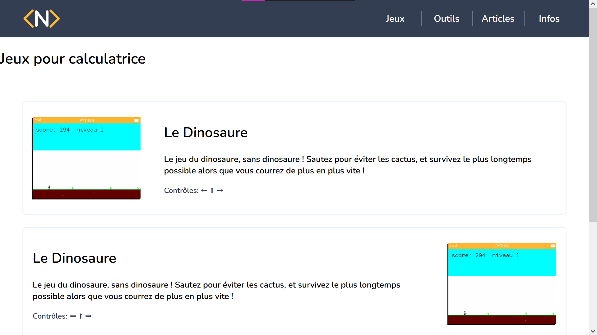
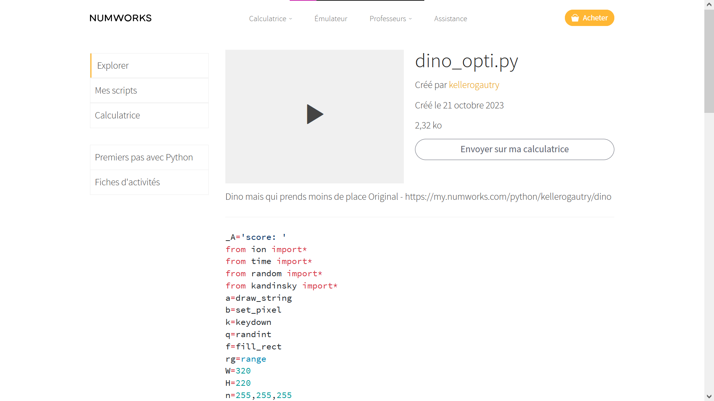

Dans cet article, nous verrons comment installer un jeu sur votre calculatrice Numworks et le lancer. N'hésitez pas à ajouter sur Discord pour plus de précisions !
Aller sur la page des jeux et séléctionner celui qui vous intéresse. Passez votre souris sur les contrôles pour savoir comment y jouer.
La plupart du temps les jeux sont diponibles sous deux versions: la version lisible si vous voulez essayer de comprendre le code, la version optimisée pour prendre moins de place sur votre calculatrice. Par défaut, la version sélectionnée est celle optimisée.
Vous devez utiliser le navigateur google chrome pour cette partie ! Branchez votre calculatrice sur votre ordinateur, cliquez sur le bouton "envoyer sur ma calculatrice" et suivez les instructions.
Allumez votre calculatrice et dans le menu, sélectionnez Python. Dans le liste des programmes, descendez jusqu'au nom du jeu, sélectionnez les trois petits points et enfin exécutez le programme !